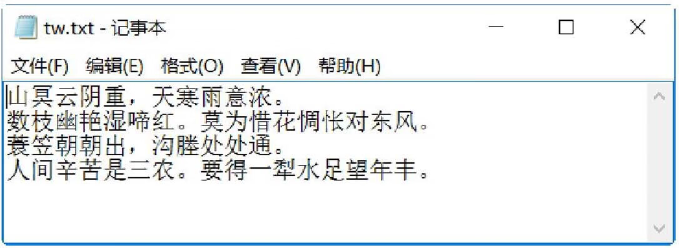

首页 > 编程笔记
Python writelines()方法：向文件中写入多行字符串
Python writelines() 方法可以向文件写入一个序列字符串列表，若需要换行，则要加入每行的换行符。
writelines()方 法的语法格式如下：
例如创建一个空白内容的文本文件 tw.txt，将字符串列表的内容写入 tw.txt 文件中。
【示例】将字符串列表的内容写入 tw.txt 文件中。
writelines()方 法的语法格式如下：
file.writelines([str])
其中，参数 str 为写入文件的字符串序列。例如创建一个空白内容的文本文件 tw.txt，将字符串列表的内容写入 tw.txt 文件中。
【示例】将字符串列表的内容写入 tw.txt 文件中。
fu=open('tw.txt','w') #打开文件
print ("文件名为: ", fu.name) #输出文件的名称
sq=["山冥云阴重，天寒雨意浓。\n", "数枝幽艳湿啼红。莫为惜花惆怅对东风。\n","蓑笠朝朝出，
沟塍处处通。\n", "人间辛苦是三农。要得一犁水足望年丰。"]
fu.writelines(sq) #将字符串列表内容添加到文件中
fu.close()
写入完成后，查看 tw.txt 的内容，输出结果如图1所示。

图1：tw.txt的内容
图1：tw.txt的内容
关注公众号「站长严长生」，在手机上阅读所有教程，随时随地都能学习。内含一款搜索神器，免费下载全网书籍和视频。

微信扫码关注公众号